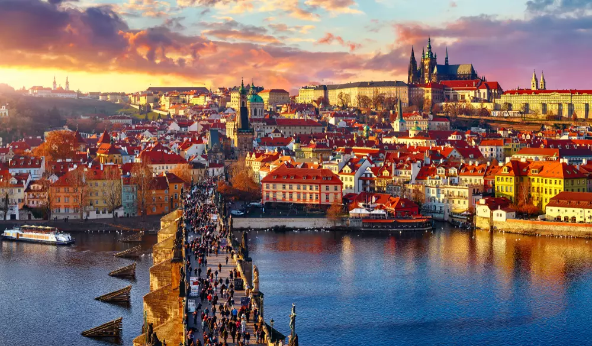

Vitejte na jednoduché stránce věnované hlavnímu městu České republiky. Na této stránce najdete informace o Praze, zajímavá místa a seznam památek.
Památky | Návštěvnost památek | Znákové entity
Praha je hlavní město České republiky.
Leží na řece Vltavě.
Patří mezi nejnavštěvovanější města v Evropě.
Historické centrum města je zapsáno na seznamu UNESCO.
Pražský hrad:

Více naleznete na oficiálním turistickém portálu Prahy.
| Památka | Rok 2023 | Rok 2024 | ||
|---|---|---|---|---|
| 1. pololetí | 2. pololetí | 1. pololetí | 2. pololetí | |
| Pražský hrad | 800 | 950 | 850 | 1000 |
| Karlův most | 700 | 850 | 750 | 900 |
| Petřínská rozhledna | 300 | 400 | 350 | 450 |
Symbol menší než: <
Symbol větší než: >
Znak ampersand: &
Copyright: ©
Euro: €
Pevná mezera: Praha 1
Děkujeme za návštěvu této ukázkové stránky o Praze.